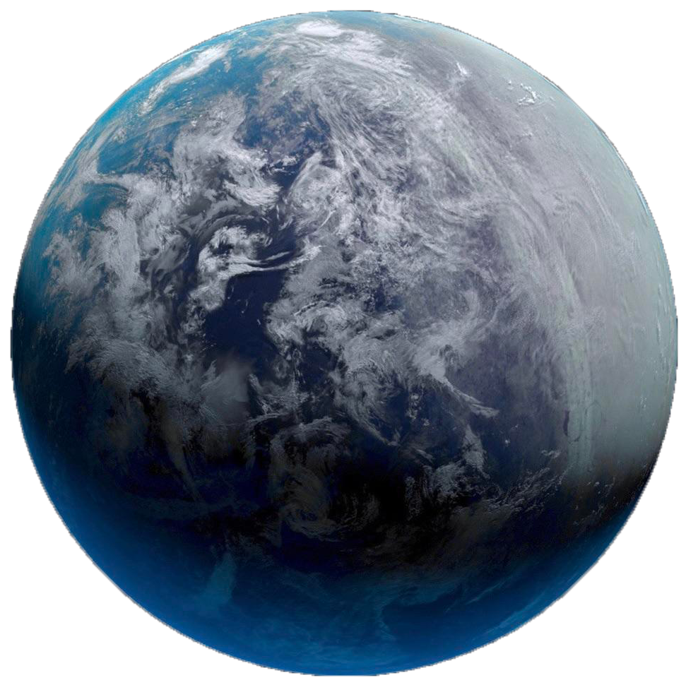
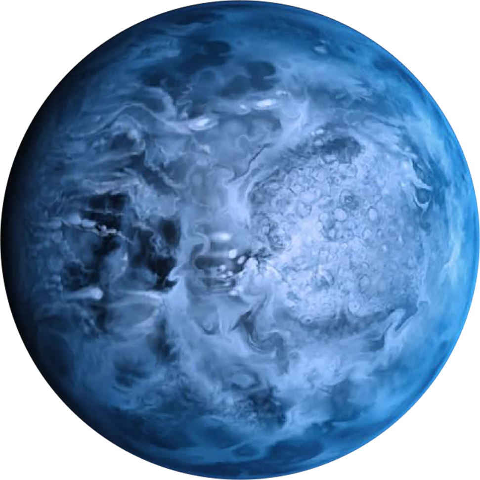
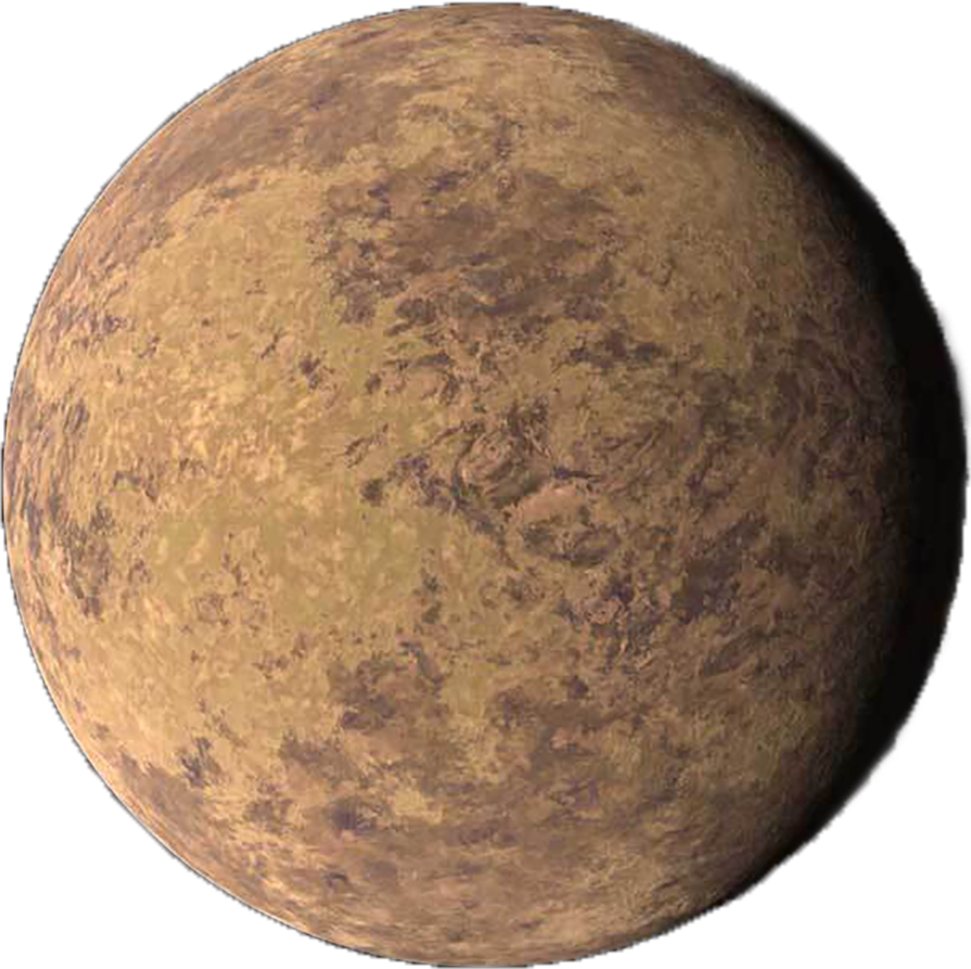

K2-18b
EPIC 201912552 b
K2-18b, also known as EPIC 201912552 b, is an exoplanet orbiting the red dwarf K2-18, located 124 light-years away from Earth. The planet, initially discovered with the Kepler space telescope, is about eight times the mass of Earth, and is thus classified as a Mini-Neptune.
HD 189733 b
K-type star
HD 189733 b is an exoplanet in the constellation of Vulpecula approximately 64.5 light-years away from our Solar System. Astronomers in France discovered the planet orbiting the star HD 189733 on October 5, 2005, by observing its transit across the star's face.
TOI 849 b
the M-dwarf star
TOI-849 b is an exoplanet orbiting the M-dwarf star TOI-849. It is a candidate chthonian planet, the exposed core of a gas giant that had its atmosphere stripped away by stellar radiation.